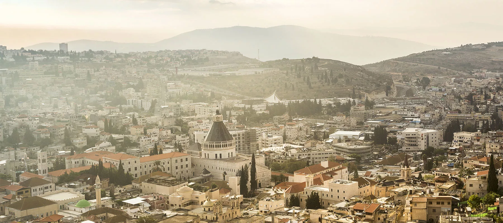

Назарет (отрасль, отпрыск или огражденное место) (Мф. II, 23, Мк. I, 9, Лк. I, 26, Ин. I, 45–48 и др.) (по-арабски Наера или Назира) – город в Галилее, в кол. Завулоновом, лежащий на ю.-з. от Капернаума и к западу от южного конца Тивериадского озера, в 6 или 7 англ. милях на запад от горы Фавор, более чем с 3000 жителей из греков, католиков, магометан и др.
Назарет стоит в нагорной долине, откуда открывается прекрасный вид на долину Ездрилонскую и на горы Фавор, Гелвуй, Кармил и др. и на Средиземное море. Население его в евангельское время было бедно и невелико, и жители, как кажется, не отличались добрыми нравами, по крайней мере, не пользовались хорошей репутацией и были в презрении других. Из Назарета может ли быть что доброе? Это выражение обратилось как бы в притчу.
Назарет приобрел себе всемирную известность как место, где жили праведный Иосиф, обручник Пресв. Девы, и особенно как место Благовещения архангелом Гавриилом Пресв. Деве о рождении от Нее Сына Божия (Лк. I, 26). В Назарет возвратились Иисус, Мария и Иосиф после своего пребывания в Египте (Мф. II, 23). Здесь протекло все детство, отрочество и последующая жизнь Иисуса до самого Его вступления в открытое служение спасению человеков (Лк. II, 39–51). Здесь в синагоге назаретской Он однажды читал и объяснял Свящ. Писание. После чего все находившиеся в синагоге исполнились ярости и, выгнав Иисуса вон из города, повели Его на вершину горы, на которой был построен Назарет, чтобы свергнуть Его, но Он, прошедши посреди них, удалился (Лк. IV, 30).
Вследствие того обстоятельства, что Господь Иисус долго жил в Назарете, Он был прозван Иисусом Назореем (Ин. XIX, 19). Даже доселе восточное название для христиан есть нозрани или назаряне.

Назарет сегодня - это самый христианский город в современном Израиле, в нем насчитывается около тридцати церквей и монастырей, множество христианских учреждений, представительств, благотворительных миссий, духовных школ. Назарет до сих пор единственный город в Израиле, в котором воскресенье является выходным днем. Современный Назарет - это смесь различных этнических и религиозных групп. Бок обок живут здесь арабы-христиане и арабы-мусульмане, православные греки, мелхиты, католики и многие другие. Город разделен на кварталы, которые можно распознать по куполам церквей и минаретам мечетей: православный квартал, католический, мусульманский, а также много смешанных кварталов.
Назарет мало в чем изменился с течением веков, его извилистые немноголюдные узкие улочки, стоящие вплотную друг к другу, вымощенные булыжником старые переулки, монастыри и церкви, восточный облик и неспешная жизнь горожан, разнообразные глиняные изделия, продающиеся уличными торговцами, живо вызывают в памяти евангельский рассказ об Иосифе, который, по словам Ангела, «взял Младенца и Матерь его... и, придя, поселился в городе, называемом Назарет, да сбудется реченное через пророков, что Он Назореем наречется».
География
В древних текстах упоминаются два местоположения Назарета: Галилейское (северное) в христианских Евангелиях и южное (Иудейское), упомянутое в нескольких ранних неканонических текстах.
Современный Назарет расположен в естественной чаше, высота которой от 320 метров над уровнем моря до вершины холмов составляет около 488 метров. Назарет находится примерно в 25 километрах от Галилейского моря и примерно в 9 километрах к западу от горы Фавор. Крупнейшие города Иерусалим и Тель-Авив расположены примерно в 146 километрах и 108 километрах соответственно от Назарета. Назаретский хребет, на котором расположен город, является самым южным из нескольких параллельных хребтов, простирающихся с востока на запад и характерных для возвышенной равнины Нижней Галилеи.